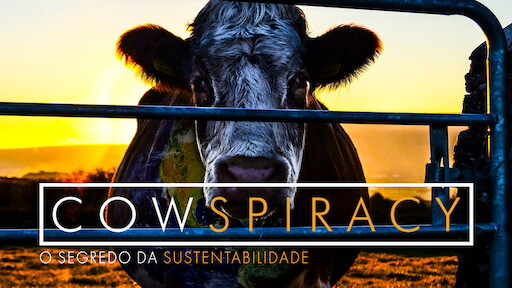
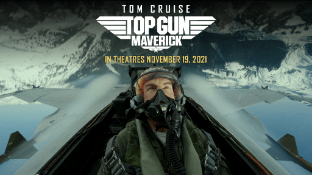
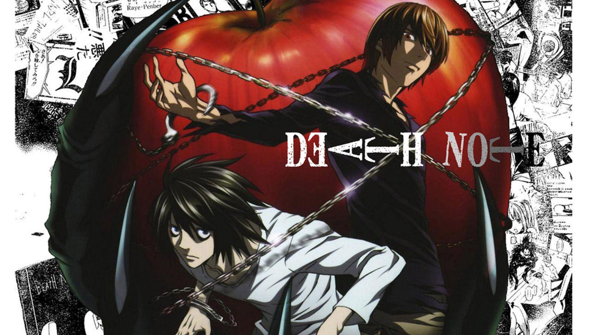
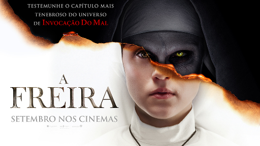

-

Cowspiracy: o segredo da sustentbilidade
“Cowspiracy” narra a jornada de Andersen, que descobre por um estudo da ONU que a maior parte dos impactos prejudiciais ao meio ambiente tem como causa mais significativa a atividade pecuária. Ao consultar os principais órgãos de defesa ambiental, inclusive os governamentais, e descobrir que nenhum deles aborda o fato, Andersen se sentiu como numa trama conspiracionista, onde apenas ele parecia saber a verdade.
Assistir
-

Top Gun: Ases Indomáveis
Acompanhamos a história de “Maverick”, um piloto à moda antiga da Marinha que coleciona muitas condecorações, medalhas de combate e grande reconhecimento pela quantidade de aviões inimigos abatidos nos últimos 30 anos. Entretanto, nada disso foi suficiente para sua carreira decolar. A explicação para esse declínio é simples: Ele continua sendo o mesmo piloto rebelde de sempre, que não hesita em desafiar a morte.
Assistir
-

Death Note
A história centra-se em Light, um estudante do ensino médio que descobre um caderno sobrenatural chamado Death Note, no qual pode matar pessoas se os nomes forem escritos nele enquanto o portador visualizar mentalmente o rosto de alguém que quer assassinar. A partir daí Light tenta eliminar todos os criminosos e criar um mundo onde não exista o mal, mas seus planos são contrariados por L, um famoso detetive particular.
Assistir
-

A Freira
Fazendo parte da franquia Invocação do Mal, após uma irmã cometer suicídio em um convento na Romênia, o Vaticano envia um padre atormentado e uma noviça para investigar o ocorrido. Arriscando suas vidas, a fé e até suas almas, os dois descobrem um segredo profano no local, confrontando-se com uma força do mal que toma a forma de uma freira demoníaca e transforma o convento num campo de batalha espiritual.
Assistir